Mockups only, not working pages. Same colors, font and card style as the Relay app. Pages on an amazoncognito.com address are AWS’s sign-in page: there only the colors, logo, background and icon can change, not the wording. The Relay mark is a first sketch, and the clinic logo is soft because the only file we have is 224 px wide. Click any picture to open it full size.
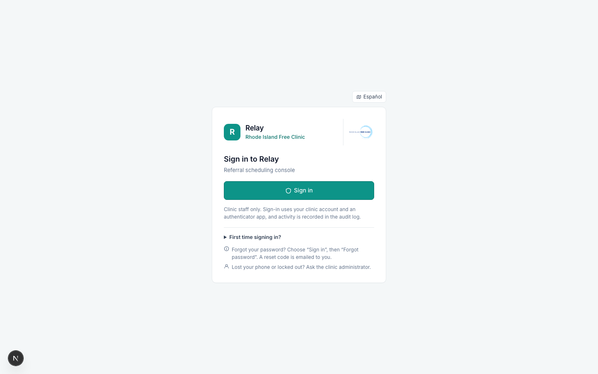
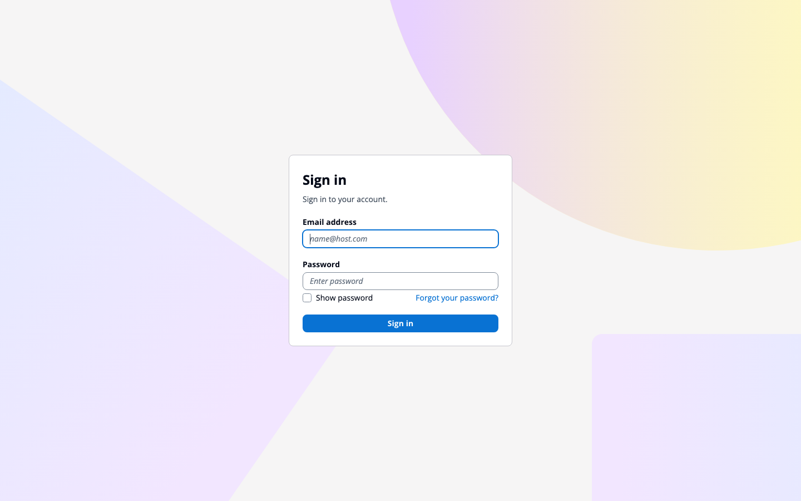
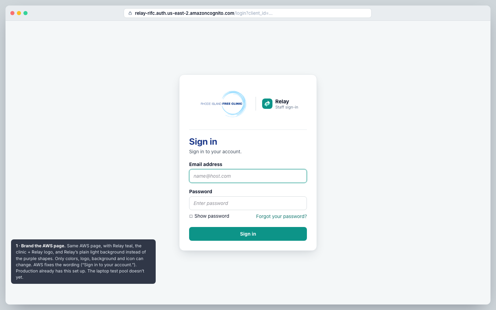
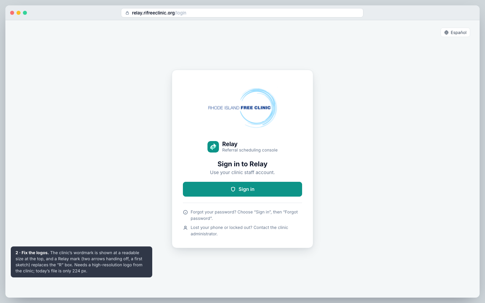
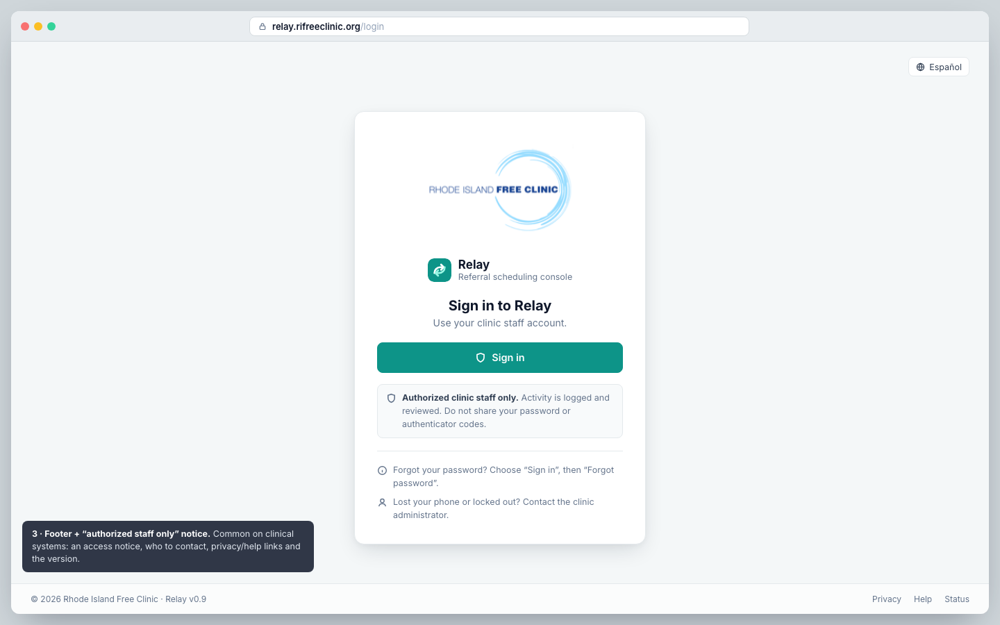
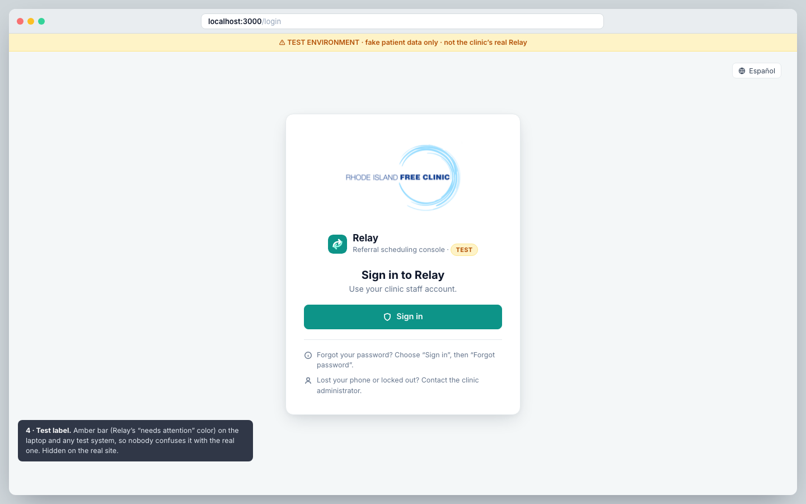
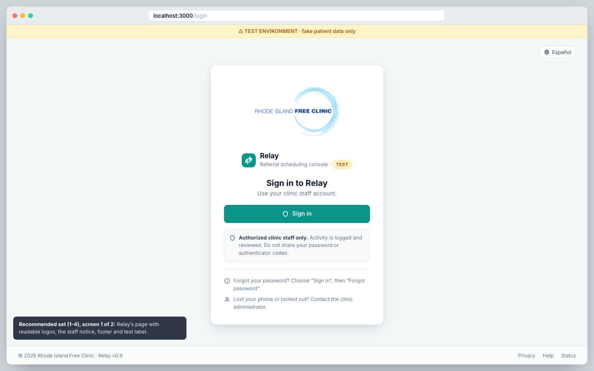
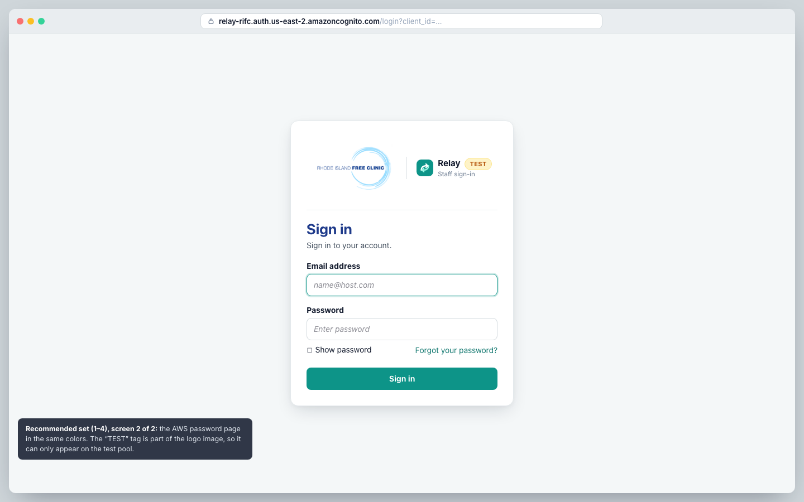
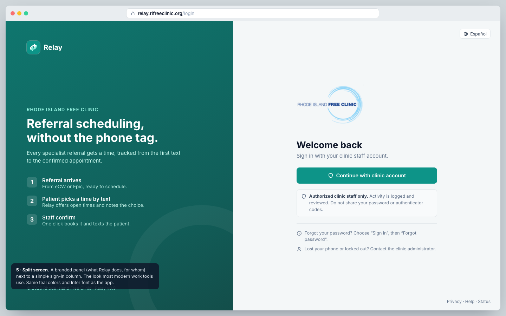
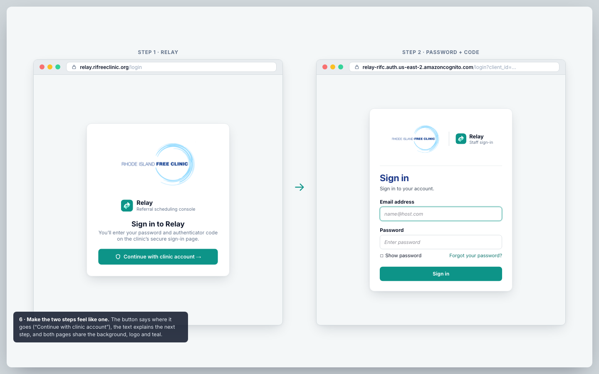
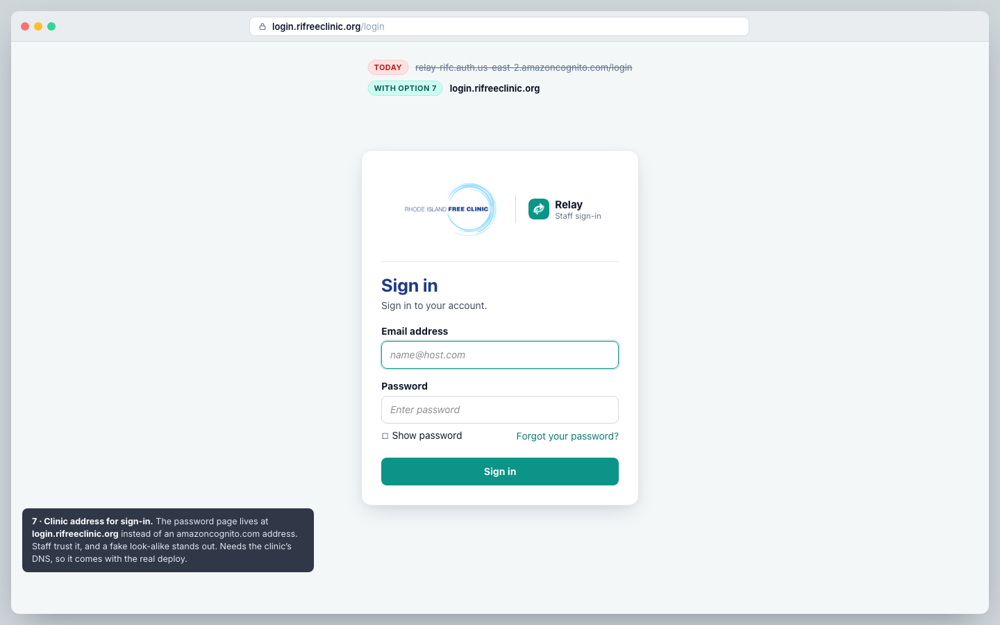
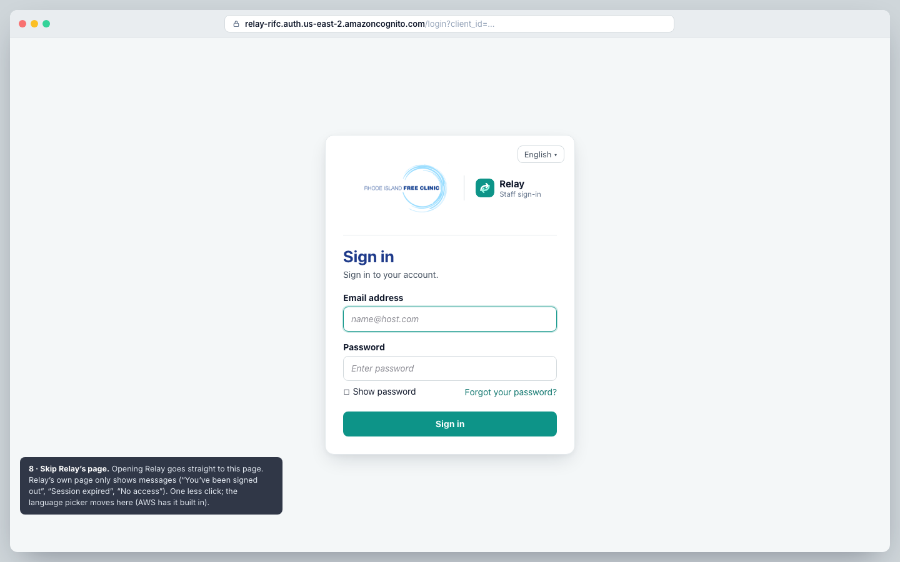
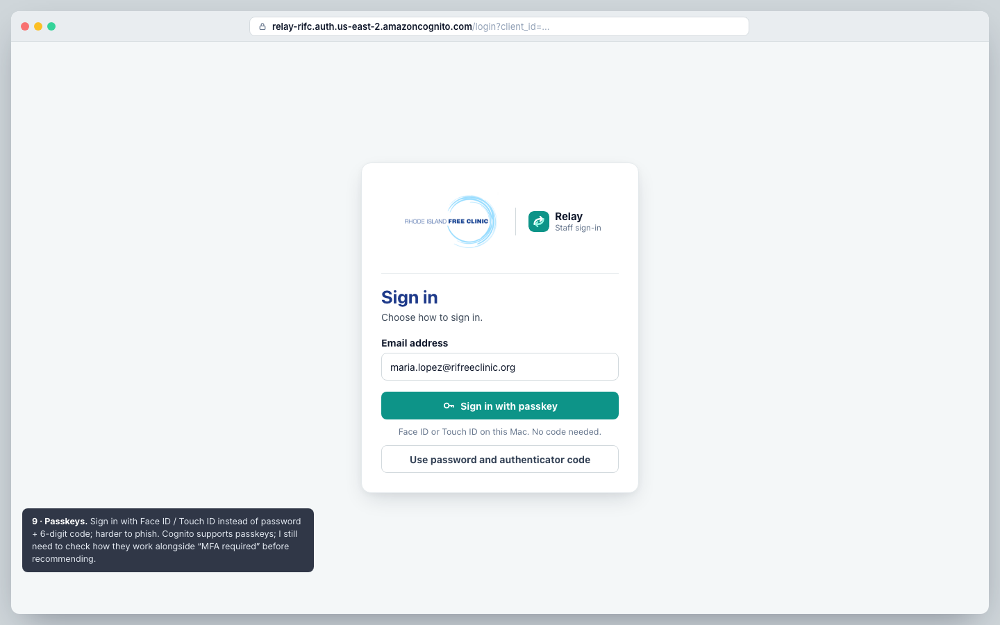
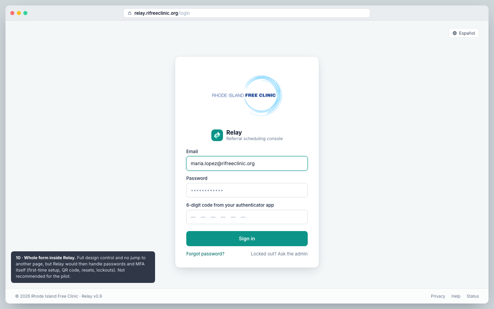